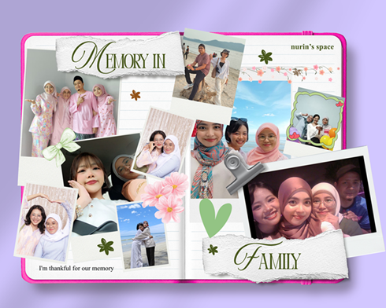
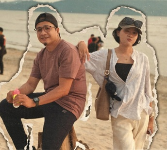
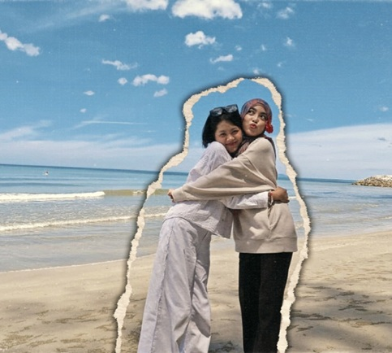
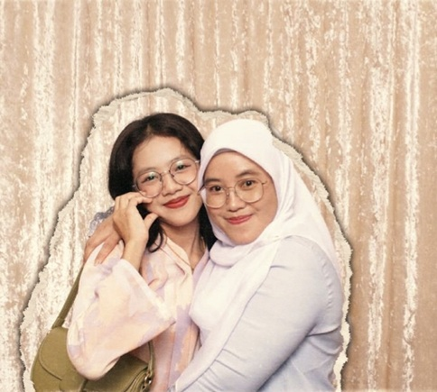
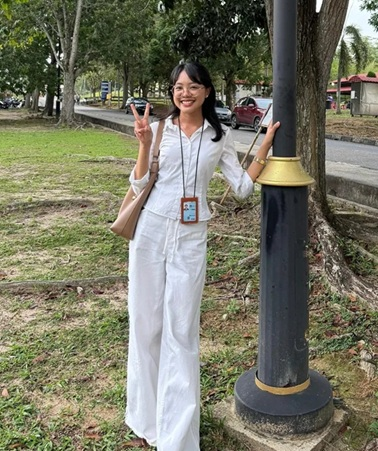

Nurin Sofea's Space <3 Nurin Sofea's Space <3 Nurin Sofea's Space <3 Nurin Sofea's Space <3 Nurin Sofea's Space <3 Nurin Sofea's Space <3
My Family
The center of my world and my greatest blessing!
MEETMYFAMILYMEMBERS


My Father
My Father
This is my father, Suziyana Bin Mohd. Zamri. He is 50 years old.
My father is an aircraft technician.
My father favourite color is navy green.
Throughout my life, my father has supported me in my education and encouraged me to pursue my goals with confidence. Whenever I face challenges, he motivates me to stay strong and never give up.

My Sister
My Sister
This is my sister, Nurina Fatihah Binti Suziyana. She is 23 years old.
My sister is currently working as internship marketing.
My sister favourite color is pink.
She is someone I can talk to, laugh with and rely on whenever I need advice or encouragement. Her understanding personality and positive attitude make her a wonderful sister and friend.

My Mommy
My Mother
This is my mother, Khatijah Binti Mat Baseri. She is 48 years old.
My mother is working as senior business executive.
My mother favourite color is soft yellow.
My mother is always there to encourage me when I face difficulties and celebrate my achievements, no matter how big or small. Her words of wisdom, kindness and understanding have taught me many valuable life lessons. I admire her ability to care for our family while remaining strong and compassionate in every situation.

Nurin Sofea
Me
This is me, Nurin Sofea Binti Suziyana. I am 21 years old.
I am a student in UiTM Cawangan Kedah, currently persuing Diploma of Library Informatics.
My favourite color is white.
I would describe myself as an energetic and open-minded person who loves spending time with the people I care about. Whether it is sharing stories with friends, making memories with my family, or trying something new, I appreciate the little moments that make life meaningful.